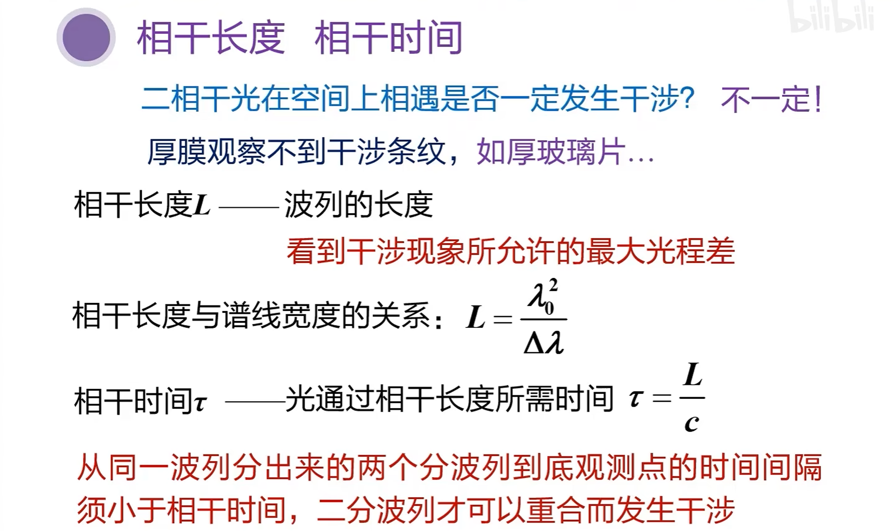
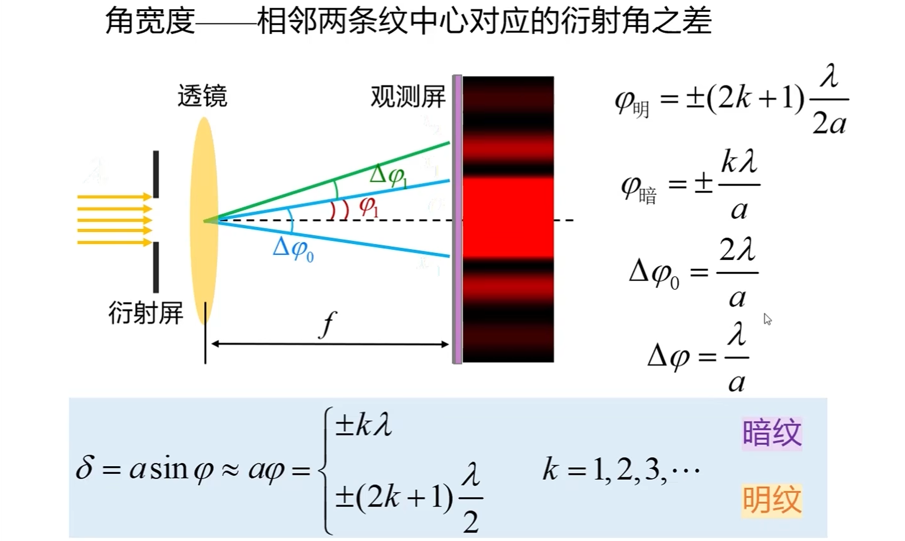
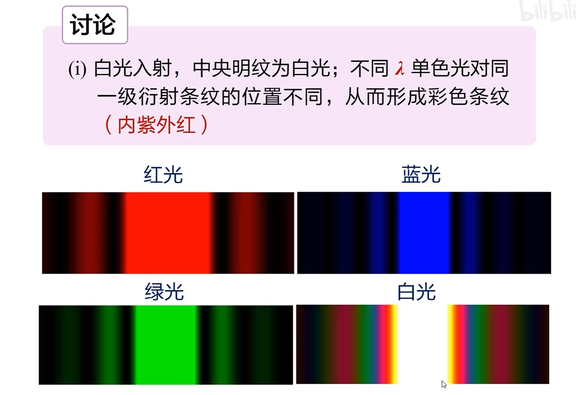
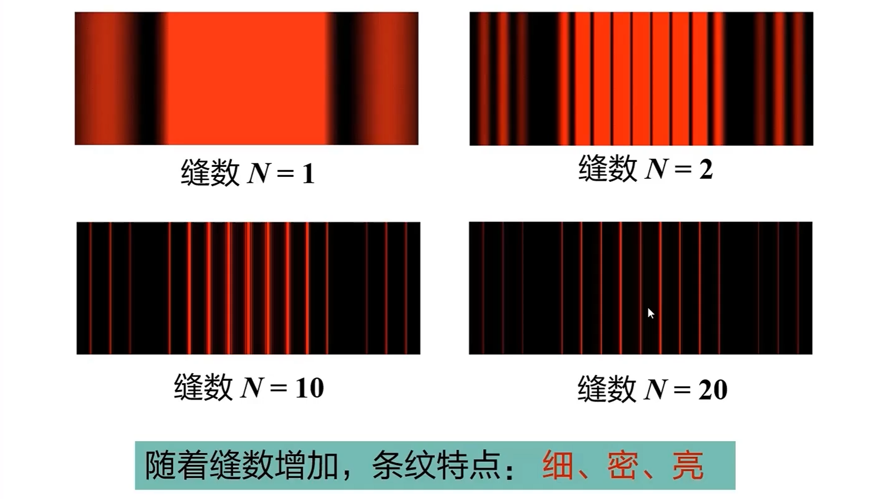
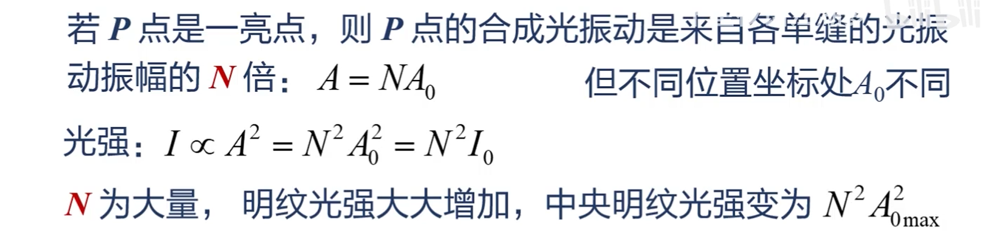
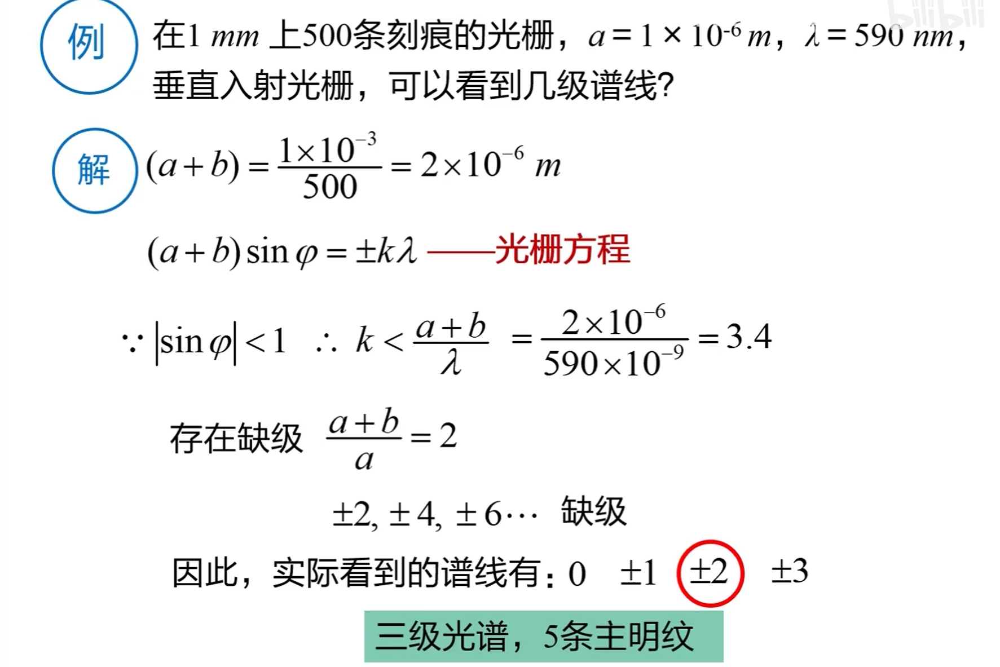
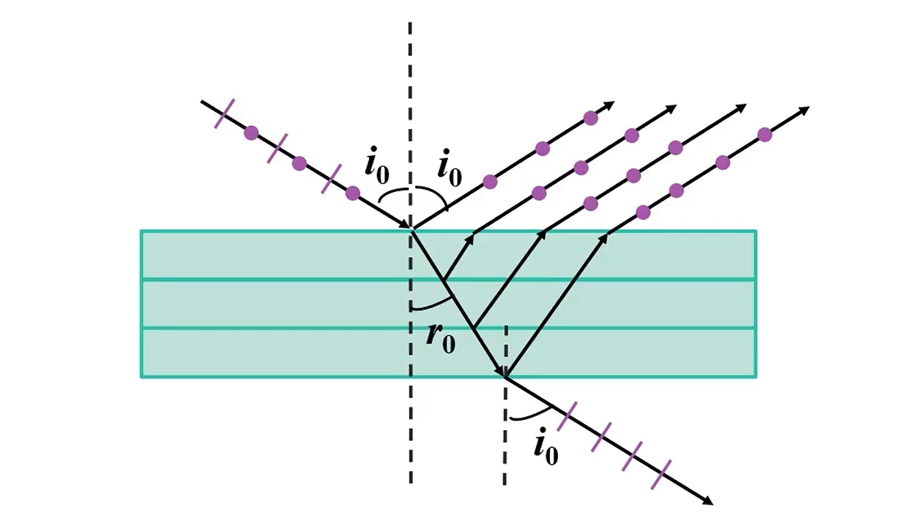
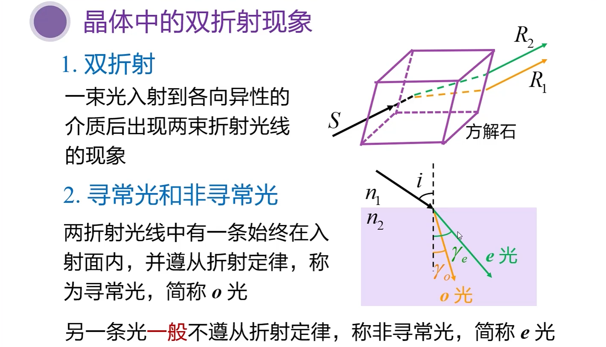
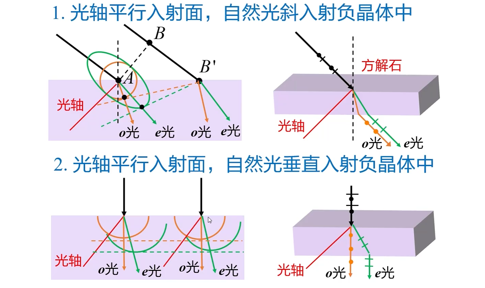

XDU 光学笔记
迈克耳逊干涉仪
原理
关于干涉条纹的讨论


其中 \((n-1)\) 代表了折射率的差。
面光源 $ S $ 不同角度入射

-
$ \delta $ 是 1、2 两束光的光程差。
-
$ n $ 是 $ M_1 $ 和 $ M_2 $ 之间的折射率，一般是空气为 1。
-
等倾干涉条纹：半径大处，干涉级次小。

相干长度、相干时间
发生干涉的条件

两个公式

惠更斯-菲涅尔原理
光的衍射现象


这就是 泊松亮斑。
惠更斯：引入子波

但是没解决“为什么子波的强度变了？”的问题。
菲涅尔：子波是相干波

衍射的种类

衍射角 $ \phi $
透镜不会引起额外的光程差。

单缝夫琅禾费衍射：半波带法
实验装置

半波带法

要注意的是 AC 面发出的平行光才等光程。


衍射和此前所讲的干涉不同之处：
-
明/暗纹 条件互换。
-
$ k \ne 0 \(，也就是说它只能从 1 开始。\)k$ 代表了第几纹路。
补充讨论

例题

单缝夫琅禾费衍射：条纹的计算
明暗纹的位置

使用近似，将 $ \sin \phi $ 近似为 $ \tan \phi $。
条纹的宽度
条纹角位置和角宽度

附加讨论


注意这里的透镜画的过于小了，容易造成误导。
结论匪夷所思，但是至关重要。
特例：平行光与透镜有夹角

单缝夫琅禾费衍射：光学仪器的分辨本领
圆孔夫琅禾费衍射
艾里斑角半径公式

瑞利判据

此时最小分辨角： $$ \phi_0 = 1.22\frac{\lambda}{D} $$ 刚好就是第一级暗环的衍射角。
分辨本领
分辨本领 R 是 $ \phi_0 $ 的倒数。
最小分辨率： $$ R = \frac{D}{1.22\lambda} $$
例题
光栅衍射
透射衍射光栅
衍射光栅的基本特点
条纹成因

以双缝光栅为例
衍射条纹随缝数变化规律

原因分析


条纹分析（计算主级大）
中央明纹

其它各级明纹条件

光栅方程类似于干涉的明纹条件： $$ (a+b)\sin \phi = \plusmn k\lambda, ~k=0,1,2,... $$
明纹的限制条件
缺级 的条件：
例题

暗纹
自然光与偏振光
自然光
其中，自然光的表示方法。
偏振光
完全偏振光

部分偏振光
起偏、检偏和马吕斯定律
起偏和检偏

马吕斯定律
应用
立体电影、特殊玻璃门 是偏振作用。
折射、反射产生的偏振光
入射面：入射光和法线确定的平面。
布儒斯特定律

应用
用玻璃堆获得两束相互垂直的线偏振光。

双折射
晶体的双折射
非寻常光

光轴
主平面

正晶体、负晶体


惠更斯原理解释双折射


晶体偏振器
波晶片
全波片
\[
\Delta \phi = \frac{2\pi}{\lambda} \left(n_{o} - n_{e}\right) d = 2k\pi
\]
半波片
\[
相位差 \Delta \phi = \frac{2\pi}{\lambda} \left(n_{o} - n_{e}\right) d = (2k + 1)\pi
\]
1/4 波片
\[
\Delta \phi= \frac{2\pi}{\lambda} \left(n_{o} - n_{e}\right) d = 2k\pi +\frac \pi 2
\]